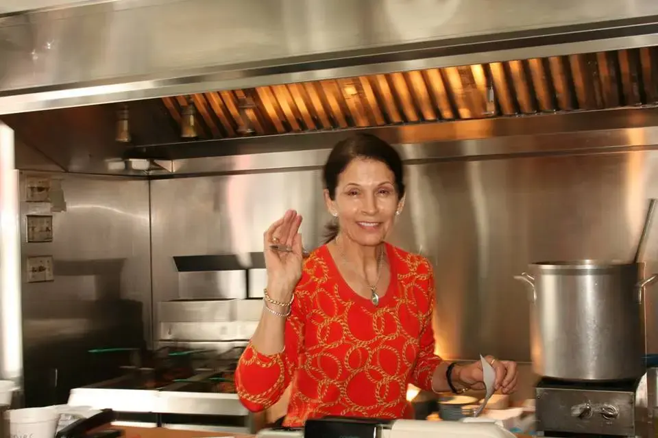

<!-- Desktop Navigation -->
<nav class="hidden sm:flex ml-auto space-x-8 text-lg text-purple-900 font-semibold"
     aria-label="Primary Navigation">
  <a href="index.html" class="hover:underline focus:outline-none focus:ring-2 focus:ring-purple-700 focus:rounded-sm">Home</a>
  <a href="about.html" class="hover:underline focus:outline-none focus:ring-2 focus:ring-purple-700 focus:rounded-sm">About Us</a>
  <a href="menu.html" class="hover:underline focus:outline-none focus:ring-2 focus:ring-purple-700 focus:rounded-sm">Menu Page</a>
  <a href="contact.html" class="hover:underline focus:outline-none focus:ring-2 focus:ring-purple-700 focus:rounded-sm">Contact Us</a>
</nav>

<!-- Mobile Sidebar -->
<aside id="sidebar"
       class="fixed top-0 left-0 w-64 h-full bg-purple-900 text-white transform -translate-x-full transition-transform duration-300 z-50 shadow-lg sm:hidden"
       aria-label="Mobile Navigation"
       role="navigation">

  <div class="flex flex-col h-full p-6 justify-between">
    
    <!-- Top: Close Button & Logo -->
    <div>
      <button id="closeSidebar"
              aria-label="Close Menu"
              class="text-white focus:outline-none focus:ring-2 focus:ring-yellow-400 mb-6 block ml-auto"
              type="button">
        <svg xmlns="http://www.w3.org/2000/svg"
             class="h-8 w-8"
             fill="none"
             viewBox="0 0 24 24"
             stroke="currentColor"
             aria-hidden="true">
          <path stroke-linecap="round"
                stroke-linejoin="round"
                stroke-width="2"
                d="M6 18L18 6M6 6l12 12" />
        </svg>
      </button>

      <!-- Sidebar Logo / Title -->
      <div class="flex flex-col items-center mb-8">
        
        <h2 class="text-xl font-bold text-white text-center">Gus's Hot Dog King</h2>
      </div>
    </div>

    <!-- Navigation Links (Vertical) -->
    <nav class="flex flex-col gap-4" aria-label="Mobile Navigation Links">
      <a href="index.html" class="block text-lg hover:underline focus:outline-none focus:ring-2 focus:ring-yellow-400 focus:rounded-sm">Home</a>
      <a href="about.html" class="block text-lg hover:underline focus:outline-none focus:ring-2 focus:ring-yellow-400 focus:rounded-sm">About Us</a>
      <a href="menu.html" class="block text-lg hover:underline focus:outline-none focus:ring-2 focus:ring-yellow-400 focus:rounded-sm">Menu Page</a>
      <a href="contact.html" class="block text-lg hover:underline focus:outline-none focus:ring-2 focus:ring-yellow-400 focus:rounded-sm">Contact Us</a>
    </nav>

    <!-- Bottom: Sidebar Image -->
    <div class="mt-auto flex justify-center">
      
    </div>

  </div>
</aside>
